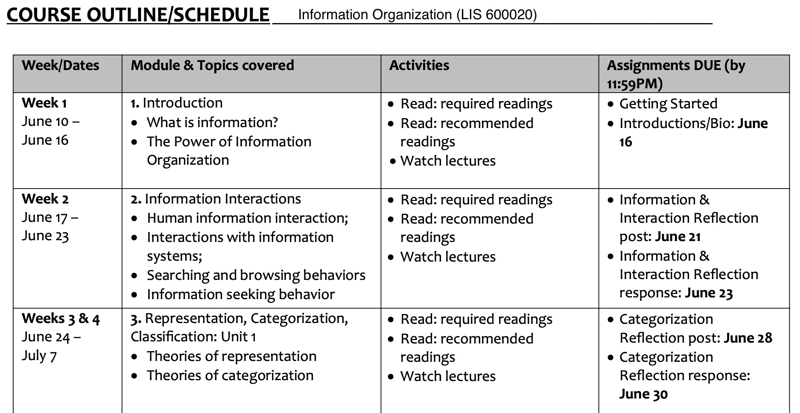
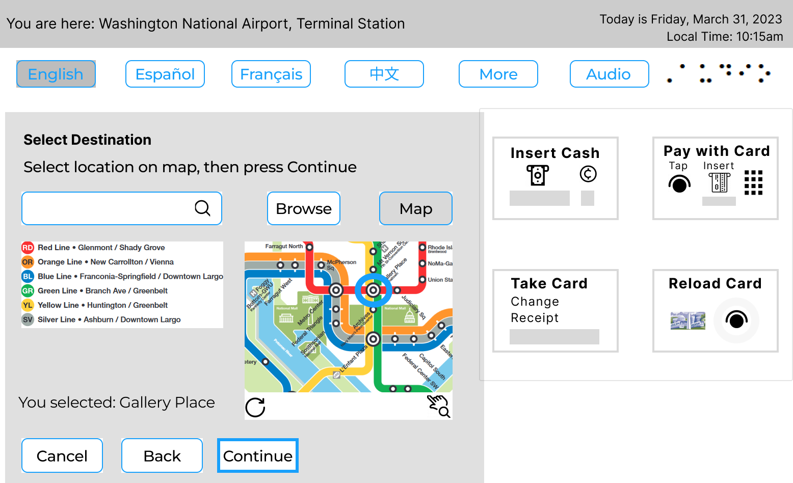
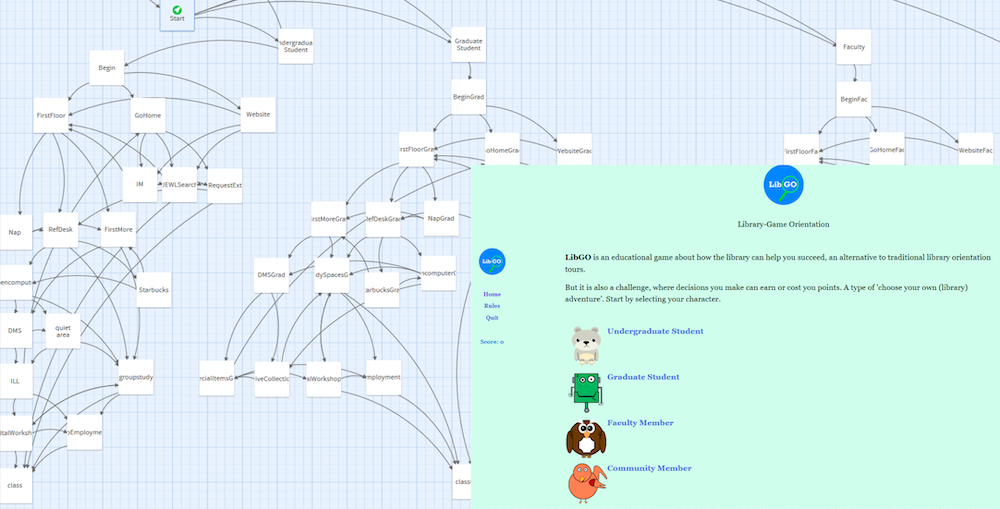

Research and Writing
Teaching
Informal Teaching and Mentorship
Systems Development
Ticket Kiosk (Research and Design)
Grant Funded Systems and Exhibits
Service and Participation
Experience
My research interests include user experience design and socio-technical systems. User experience design looks at design characteristics that result in poor user performance with a system or product and tries to improve a user’s experience with that system or product by researching user behavior—their wants, needs, and frustrations.
For example, have you ever gone to open a door and you pushed rather than pulled it open or vis versa?
What characteristics of that door made you think it was push to open instead of pull?
Similarly, on a website, have you ever spent a lot of time looking for something but just couldn’t find it?
These examples highlight how intuitive a product or system is, how information is laid out for discovery or navigation, and how frustrating or enjoyable it can be for the user. Researching how to design systems with a human-centered focus can impact the end user’s experience and their ultimate use of that system or product. Understanding how to create and design for the totality of those matters is something I research and design because it affects people around the world.
Research and Writing
Over 25 peer-reviewed publications with 160+ citations on UX, inclusive design, scholarly communication, digital publishing, socio-technical systems, and digital research methods. See my CV for a full list. The most recent publications are below.
Artifact 1—Book Chapter
(In press) "Inclusive Design: A Method and Craft of Transforming DH with UX,” In Digital Humanities in the Library: Challenges and Opportunities for Subject Specialists, Revised Second Edition, Eds. Arianne Hartsell-Gundy, Laura Braunstein, and Liorah Golomb. Association of College & Research Libraries. (Once published, copy will be placed here).
Project design in user experience and digital humanities share many of the same motivating questions. When setting up surveys as part of your research, do you consider the language or purpose of the question? Are there leading questions? Have you considered the background or demographics of your audience? When setting up tasks for user testing a research project, do you strategize how to recruit users with a diverse approach or just try to get as many as possible? These are just a few of the questions user experience (UX) professionals would consider when creating a digital project. These questions should also be asked by the creators of digital humanities (DH) projects.
This chapter provides an introduction of the problem and definitions of the UX field, an overview of the user-centered design phases and its applications, an overview of UX research and design phases and the importance of applying UX to DH. Then the chapter concludes with an inclusive design checklist that can help root the UX process in digital projects, regardless of the role of the subject specialist or reader of the book. This chapter is neither comprehensive nor definitive but intended to be helpful to those who are new to UX and inclusive design of digital projects.
In retrospect, I would have liked to add a workflow, for a visual representation of the different phases of UX design. However, this would have increased the length of the book chapter, which is problematic for most publishers that have firm text length requirements. Publishing as a journal article would have also provided more immediate access as book publishing timelines are generally a lot longer than open access journals. In my field, waiting two years for publication is long enough to make the information obsolete.
Artifact 2—UX Research Brief
(2023). UX Brief on Space Planning.
Academic libraries regularly need to re-evaluate services and spaces to accommodate for the growing and changing user populations. Library users have varying preferences and needs when it comes to library space usage, including but not limited to solo workspace, group workspace, noise level preferences, seating comfort preferences, and service options.
The study utilized a qualitative mixed-methods approach to discover the user perception of “spot” selection in an academic library by interviewing ten library users. Users were selected across all four floors, and in different sections of the library in November 2022. The results suggest metrics for assessing and designing library spaces.

In retrospect, interviewing another set of users at a different time period (e.g. evening or weekend) or a different semester (e.g. spring or summer), would have given an additional perspective. As an experiment, I had users draw maps of their library knowledge during the interviews, a type of journey mapping based on memory. This process had intended to correlate knowledge and memory but there was insufficient time for detailed analysis and deliverable goals. This is something I would have changed, either exclude the journey mapping or allow sufficient time to see it through. The results suggest metrics for assessing and designing library spaces.
Artifact 3—Publications Under Review
Regardless of the target industry (health, business, media, education, etc.), UX, HCI, and inclusive design can impact the end user’s experience of a system or product. I work and research to improve those experiences. Current research and publications in these areas are included below (citation and abstracts).
(Under review fall 2023). “Human Computer Interaction and Inclusive Design Implications for Ticket Kiosks: A Pilot Study of Task Analysis and Usability.”
The current ticket kiosks used in a U.S.-based metro transportation system is out of date and confusing for infrequent travelers to that area. Research and design solutions have been developed to overcome the existing challenges after the initial user research phase. This study also involves the evaluation of a ticket kiosk’s user interface using screeners to recruit participants who have previously purchased tickets via an interface, and the use of scenarios and tasks to identify usability and design issues. Iterative testing and design included testing feedback sessions as part of this pilot study. The use of websites for interactive prototypes are also used to track first-clicks and task completion. With a design thinking approach and use of a think aloud protocol, iterative designs and evaluation were conducted with a particular focus on inclusive design aspects. The inclusive design recommendations are broadly applicable for other uses. For example, the same accessible and inclusive design process can be beneficial to ticket kiosks at airports, used in a lobby for reserving concert tickets, used in waiting rooms for healthcare providers, paying parking fees, or tickets for entrance to museums, amusement parks, and utility bill, hospital or medical payments, and more.
(Under review fall 2023).“Wayfinding and the User Experience of Space Selection in Learning Spaces: Systematic Review and Guide for Next Steps.”
College and university users have varying needs and preferences when it comes to learning space usage. These learning spaces need to re-evaluate services and environmental aspects to accommodate for the growing and changing user populations. Before evaluating a specific learning space, a broader look at the topic can help understand the problem, identify trends, and help design research questions and goals for next steps. This article covers the first step, a systematic review of the topic: wayfinding and the user experience of space selection in a specific type of learning space: academic libraries. This investigation highlights methods used in similar studies, identifies gaps or flaws in the literature, and guides space design practice for future implementation. The synthesis and findings of this systematic review can help colleges, universities, and libraries jump start their next steps for site evaluation. The results of this study will be informative to academic institutions that have future plans or goals of redesigning learning spaces. This study gives insight into the user experience of the academic library, while also providing a template for next steps to consider that may be applicable to other learning spaces such as community centers or museums.
Teaching
I have formal and informal teaching experience, as well as program management and administration experience in higher education.
Artifact 4—Graduate Courses (Formal Teaching)
For three years, I taught graduate courses as an instructor in the College of Communication and Information at Kent State University. My students came from programs including information, digital sciences, journalism, visual communication, and UX design. Overall, my courses largely focused on information technologies and modern theories and techniques for information design, storage, dissemination, preservation, and retrieval.
Information Technology for Information Professionals (2 sections)
Introduction to information technology concepts: computer hardware and software basics, operating systems, information systems evaluation, HTML,
web apps, emerging technologies, and digital platforms.
Information Organization (7 sections)
Theory and practice of information organization and retrieval in various information environments, including knowledge organization, metadata, information management, data ethics, human computer interaction.

In retrospect, I would have liked to add an assignment of using A/B testing. Giving students an opportunity to compare two different site layouts of the same type of system (a catalog, website, or repository). For example, a website with good information organization and another with poor organization. The assignment objectives would help students identity theories, behaviors, and interactions needed to use the system, while also helping them to understand one method of evaluating a product (the A/B testing process).
Artifact 5—Mentorship (Informal Teaching)
I teach workshops and guest lectures on digital humanities, web apps, project design, digital publishing, and UX/UI design. I try to incorporate research elements where students can apply skills learned and have products that may be suited for their goals: a piece for their portfolio, a paper or product to present at conferences, or a digital design experience that helps prepare them for job applications or graduate school admissions. I use the products I have created for professional practice or in my own graduate coursework as examples (reminder app, web form, 10-foot streaming interface, repository app) for students seeking consultation on design ideas where I emphasize experimentation, practicality, and design thinking. For some students, this is a motivating factor to switch majors/minors into experience design or is the missing gap in their curriculum that helps meet career goals.
One of my graduate students created a help guide on the topic of wellness (emotional, financial, mental, physical, etc.). As the student’s mentor, I guided her learning process of this topic through inclusive design practices. This included the topics of research, empathy, accessibility, and information architecture (navigation and discovery). Once the research layers were complete, I set up the infrastructure for the transfer of her research into a web-based guide that is now available for public use. View the Wellness Guide.
In retrospect, this project took a little longer than desired. I would have liked to provide a more detailed timeline for the student to adhere to rather than a loose deadline. Although we had various projects throughout the year, I could have emphasized a higher priority or allocated more research or design time in order to speed up the project completion.
Artifact 6—Other Teaching
Other teaching includes invited lecturers in interdisciplinary and graduate school seminars, humanities, social sciences, and education fields, as well as teaching workshops on various topics. Additional experience as an advisor and Curriculum Editorial Board member at the Library Publishing Coalition.
Lectures
Digitization and Preservation
Seminar on Scholarly Communication
Seminar on Digital Humanities
Scholarly Communication and Grant-Funded Research Data
Workshops
Intro to Design Thinking
Scholarly Publishing and Open Access
Introduction to StoryMaps, GIS, and Spatial Mapping
Designing Conference Posters
Intro to Digital Archives and Exhibits
DH Tools, Interactive Media, and Visualization
Curriculum Editorial Board
Recruited as a member to the Curriculum Editorial Board for the Library Publishing Coalition. Advise, review, and develop curriculum for publishing courses. Course topics are divided among four modules, with several subunits. Each module and subunit contain instructor narratives, bibliography, student learning objectives and content slides, handouts, and exercises.
Systems Development
As a professor and program manager, I oversee a research unit at an R2 research institution that uses various technologies for publishing and preservation. I plan, budget, and manage full cycle / end-to-end design work and research projects and administer various platforms, repositories, digital asset management systems, and content management systems.
Artifact 7—Ticket Kiosk
(2023). Human Computer Interaction and Inclusive Design Implications for Ticket Kiosks: A Pilot Study of Task Analysis and Usability.
The current ticket kiosks used in a U.S.-based metro transportation system is out of date and confusing for infrequent travelers to that area. Research and design solutions have been developed to overcome the existing challenges after the initial user research phase. This study involved the evaluation of a ticket kiosk’s user interface using screeners to recruit 3-12 participants who have previously purchased tickets via an interface, and the use of scenarios and tasks to identify usability and design issues. Iterative testing and design included two testing feedback sessions as part of the pilot study. The use of Figma for interactive prototypes are also used to track first-clicks and task completion. With a design thinking approach and use of a think aloud protocol, iterative designs and evaluation were conducted with a particular focus on inclusive design aspects.
The hierarchical task analysis diagram was improved upon with wireframes for the proposed kiosk. A wireframe typically focuses on the functionality and physical layout of the design, without color or graphics. The wireframes are based on pain points discovered in user research and the literature review. Iterating on wireframe drafts led to the creation of a prototype based on the wireframes. The wireframes and prototypes were created based on a specific scenario and tasks: Infrequent passengers traveling via the metro in Washington, D.C.
Task 1
Buying a Metro farecard at the Washington National Airport (DCA) to arrive at a specific destination (Gallery Place).
Task 2
Buying a Metro farecard with a specific dollar value purchased.
Low fidelity prototypes (paper wireframes) were drafted and iterated on before higher fidelity prototypes (digital simulation) were put to the test with users to evaluate the functional needs of users and effectiveness of the system design.
In addition to the slew of wireframes, there is an interactive prototype available via Figma. Both the interactive prototype and the annotated mockup show other options in the UI, such as adding value to an existing farecard or purchasing a pass, however, the wireframes and prototypes were solely designed for infrequent passengers per the parameters of the pilot study. It is possible future studies could involve wider design implications for the other purchase options, such as, iterating between challenging assumptions (ideate) with language barriers and the solution for it (protoype).
Looking at inclusive design implications for a ticket kiosk can help relieve anxiety of infrequent travelers in an unfamiliar area. Additionally, because of the universality of the design, the kiosks will also benefit frequent users as initial results of user testing indicate. This pilot study focused on user research and inclusive design aspects to improve current designs in use and future research is needed, especially with more user testing sessions. The inclusive design features included user preferences for language selection options (at any time of purchase process), search/navigation preferences (browse by list, browse by map, search by typing), payment options, and notifications of actions selected. These features give users control and flexibility.
In retrospect, although this pilot study specifically looked at the design and usability of ticket kiosks, the iterative design and inclusive design recommendations are broadly applicable for other uses. For example, the same accessible and inclusive design process can be beneficial to ticket kiosks at airports, used in a lobby for reserving concert tickets, paying parking fees, or tickets for entrance to museums, amusement parks, utility bill payments, hospital or medical payments, gym memberships, and more. Additionally, I would have liked to add interactions to the prototype for the language options, switching between languages as those buttons are pressed. For now, the idea is presented with the initial draft design.
Artifact 8—Developing a New Press Imprint and Publishing System
The MT Open Press publishing system development included platform evaluation, selection, and development. After evaluating open source and proprietary systems options, selected Open Monograph Press (OMP) by the Public Knowledge Project. This open source software was implemented as the infrastructure for publishing monographs and textbooks. Among the features evaluated, implemented plugins that will help with information design, indexing with critical identifier systems such as the PKP Preservation Network (for archiving), DOAB (for indexing), custom blocks (for unique messaging for the audience), and more. System content uses HTML, CSS, and information architecture to effectively enable users to discover, navigate, and read books online for free. I also set up the infrastructure to enable the purchase of print-on-demand books via an external vendor. I also designed the logo, site color scheme, and tested the desktop and mobile viewports prior to launching the platform.
Prior to the systems development of this publishing platform, there was extensive research done to create a system atic press process. This included writing agreements for use with potential authors, editors, consultants, and service providers. After drafting these agreements, I met with various legal counsels to ensure the agreements were accurate and appropriate for the press and university. Workflow development included:
External reviewer processes (e.g. finding and evaluating potential external reviewers to access the quality of books under review including guidance documents and payment processes for their time).
Workflows for call for proposals, author submission, and evaluation criteria.
Developmental and copy-editing workflows, including checks for plagiarism, copyright, and citation accuracy.
Cover design based on author feedback and sound visual communication strategies.
Layout and typesetting processes and tools for digital and print books.
Workflows for indexing in databases and search engines, including Worldcat, DOAB, and book reviewer sites.
Research and implementation of ISBN, DOI, LCCN, and barcodes needed for discovery and commercialization best practices.
Workflows for press release information, news posts, SEO strategies, and marketing materials such as book launch promos, design briefs, and other promotional materials.
The above workflows, plus several others, were documented in the Press Business Plan and in subsequent internal workflows in order to create consistency and transparent processes. The new press has successfully published two monographs since development in 2023.
Artifact 9—Grant Funded Systems, Research, and Exhibits
Trials, Triumphs, and Transformations (2017)
A grant funded digital humanities research exhibition that includes interpretative layers: scholarly essays, maps, interactive visualizations and descriptive metadata of rare archival findings. https://dsi.mtsu.edu/trials.
Awarded the 2018 American Studies Association Garfinkel Prize in Digital Humanities, Honorable Mention. Personal contributions included: Primary Investigator, Project Director, and Designer of Visualizations.
Game Design
An interactive ‘choose your own adventure’ orientation game with focus on educational learning and engagement. Developed in Twine, an open-source tool for telling non-linear stories with adaptions for gamification assessment as it relates to educational objectives and user engagement. Applied five phases of human-centered design: empathy, define, ideate, prototype, and test. Conducted user research, personas, data flow, wireframes, prototypes and testing.
Role: Graphic Designer, Developer, Information Architect, Interaction Designer, IRB research study and case study co-author.
With the five phases of user-centered design, coupled with iterative development throughout the phases, I designed a development approach for gamifying the library orientation experience. This development included the design, testing, and launch of a digital game, including evaluation of the game platform, coding the scoring algorithm, designing the player characters/personas and the storyline, and implementing the game architecture. Prior to launching the game, iterative testing was done with two groups of play testers and results discussed in two peer-reviewed articles.

The systems development process for the game design included:
Context and approach used a human centered design methodology
1. Empathy, 2 definition, 3 ideation, 4 prototyping, 5 testing
Implementation
1. literature and local: environmental, contextual
2. research, buy-in, stakeholders, IRB, survey design, event design
3. brainstorm, personas, POIs (storyboard), workflows
4. low/high-fidelity, code development; marketing prototypes
5. testing: (code testing: random, screen/paper proofing, playtesters; observational: ie first-click tests; think-aloud reactions, feedback); playtesting results (coding): ethnographic register of reactions in survey form; debugging.
As a result of the process outline above (and detailed in published articles), I learned that design thinking/human centered design and gamification are mutually beneficial practices. Although helpful, it is not enough to have technical skills or a mechanically functioning game. Rather it is empathy that is the foundation to good design as people will not care to play because of a lack of interest, appeal, or relevance to user preferences. Game designers should understand how to engage with users, assess what makes them interested in learning, and identify how to motivate such participation. Designing with empathy will enhance any technical design and create a more enjoyable user experience.
Artifact 10—Systems Administration and Experience
Systems and software I manage or use frequently include:
| System / Software | Type | Use |
|---|---|---|
| Adode CC, Canva, Gimp | Visual Design Tools | Graphics, Promo, Websites | Chalkmark, Treejack | UX Design Tools | Information Architecture |
| CONTENTdm | Digital Assest Management System | Digital Collections, Images, Metadata |
| Drupal | Content Management System | Website |
| DSpace | Repository | Publishing, Data Management |
| Figma, Invision, Protoio | UX Design Tools | Concepts, Wireframes, Prototypes |
| LibShare | Content Management System | Forms, Surveys, Webpages |
| OMP | Book Publishing Platform, Repository | Publishing |
| OJS | Journal Hosting Platform, Repository | Publishing |
In retrospect, this is a short list of systems and software. As technology changes, so does the need to adapt or adopt different practices and software skills. The focus is more on the workflows needed, rather than the software. Software will always change, but information architecture and content management will always been crucial for the accuracy, usability, and preservation of information systems and their information retrieval processes.
Service and Participation
Professional Service
Rotating Chair, Member, Diversity, Equity, and Inclusion Committee, (LPC), 2021-2023
Member, Library Strategic Planning Team, Middle Tennessee State University (MTSU), 2021-Present
Member, Community Engagement and Outreach Committee, MTSU, 2022-Present
Member, CEOC's Campus Workforce SubCommittee, MTSU, 2022-Present
Member, Library Leadership Team, MTSU, 2021-2023
Institutional Representative, Coalition for Networked Information (CNI) 2021-Present
Institutional Representative and voting member, LPC, 2021-Present
Section Editor, Open Library of Humanities Journal, Ubiquity Press, 2014-Present
Invited Peer Reviewer, Digital Library Perspectives, 2020, 2021
Peer Reviewer, Library Leadership and Management, 2017-Present
Invited Peer Reviewer, Journal of Web Librarianship, 2017
Peer Reviewer, Digital Humanities Quarterly, 2014-Present
Editor-At-Large, ACRL’s DH + Lib Review, 2014-2016
Professional Participation (Select)
Attendee, Search Advocate Foundations, Oregon State University, June 2022
Attendee, Coalition for Networked Information, Annual Meetings 2021, 2022, 2023
Attendee, Library Publishing Coalition (LPC) Forum Annual Conference, 2021, 2022, 2023
Planning Team and Attendee, Anti-Racism Community Call, LPC, 2021
Attendee, Designing for Digital Annual Conference, 2020, 2021